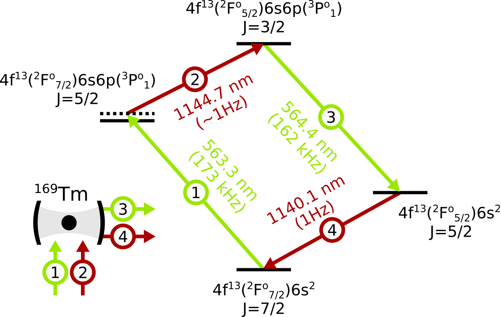

What is special about thulium?
Thulium is an open-4f-shell lanthanide with one less electron than ytterbium. Its only stable isotope is a boson with a nuclear spin \(I=\frac{1}{2}\). Thulium features a rich spectrum of energy levels with convenient properties for a number of applications. In particular, it complements the family of optical-clock atoms, experiencing vastly different systematic shifts and sensitivities to fundamental phenomena. In this context, it is exceptionally well positioned for the future optical-clock transportability and searches for Lorentz Invariance Violation (LIV).
Configuration-preserving optical-clock transition
Thulium’s lowest-energy fine-structure levels, \([\text{Xe}]4\text{f}^{13}(^2\text{F}^\text{o}_{7/2})6\text{s}^2\) and \([\text{Xe}]4\text{f}^{13}(^2\text{F}^\text{o}_{5/2})6\text{s}^2\), are linked by a 1-Hz-wide optical M1 transition at 1140 nm. The identical electronic configurations of these levels render the transition wavelength immune to a great deal of perturbations which affect the clock transitions in divalent atoms like ytterbium or strontium. Most notably, thulium’s black-body radiation sensitivity is reduced by three orders of magnitude4, compared to such atoms, lifting the requirement for cryogenic operation5,6 to realize a highly accurate and stable clock.
Lucky set of magic wavelengths
For the 1140-nm clock transition there are two known magic wavelengths4, falling close to 813 nm and 1064 nm. Both of them are quite handy in their own ways. The laser technology is very mature around 1064 nm and large amounts of optical power can be readily generated in this spectral region. While a bit less convenient in that respect, the 813 nm magic wavelength falls very close to the magic wavelength of strontium’s 698 nm optical clock transition. With precise polarization tuning, this can be utilized for dual-species magic trapping and differential spectroscopy in search for physics beyond Standard Model7.
Cooling transitions spanning a broad range of linewidths
Among the forest of spectral lines, at least three optical transitions present very high cyclicities and a convenient hierarchy of linewidths. The three-color magneto-optical trap operation starts from the cooling on a 10-MHz-wide transition (410.6 nm), goes through the second stage on a 350-kHz-wide transition (530.7 nm), and concludes with the final stage on an 8-kHz-wide transition (506.2 nm). This provides a low-loss cooling mechanism that brings the atoms to sub-\(\mu\)K temperatures prior to loading them into an optical lattice8.
Microwave clock qubit
Because of the nuclear spin \(I=\frac{1}{2}\) and the electronic \(J=\frac{7}{2}\), the lowest-energy fine-structure level splits into exactly two hyperfine levels with \(F=3\) and \(F=4\). Their \(m_F=0\) states are spaced by 1.497 GHz, forming a robust microwave clock qubit9. Such a clean realization of this encoding is unusual for lanthanides, and is more typical to alkali atoms, like Cesium and Rubidium, where it has been a workhorse of atomic quantum information processing.
What are we doing with it?
We are currently designing a continuously-reloaded10 thulium Cavity QED setup with three specific research directions in mind:
Deep measurement-based squeezing
The hyperfine structure of thulium, and the convenient qubit encoding, drastically simplify generating entanglement through techniques of cavity QED. They suppress residual spin pumping during dispersive cavity readout, allowing to implement deep measurement-based squeezing in a system comprised of \(N=10^4-10^6\) atoms11. With the cavity design optimized for collective cooperativity and collection efficiency, we are headed towards over 20 dB of metrological gain in an optical-clock atom system - well exceeding the proof-of-concept demonstrations12–15 from small-scale systems, often limited in size by spectral proximity of spin pumping transitions to dispersively-shifted cavity resonance.
Broadband search for Lorentz Invariance Violation
To date, the most stringent tests of LIV in the electron sector have exploited the metastable levels in Yb\({}^+\), populated via an optical E3 transition16,17. The lowest-energy levels in thulium share the same electronic configuration and hyperfine structure as these metastable Yb\({}^+\) levels, making them similarly sensitive to LIV18. At the same time, neutral atoms can be trapped in much larger numbers than ions. By performing analogous LIV tests with neutral thulium, we can therefore significantly broaden the bandwidth of detectable signals, enabling searches for LIV backgrounds associated with ultralight dark matter19.
Active optical frequency standard
Thanks to its low black-body radiation sensitivity, thulium is an excellent candidate for a transportable optical clock. One technological barrier towards this goal is incompatibility of modern narrow-linewidth lasers with transport. Achieving continuous-wave lasing on the clock transition would completely bypass the need for such a technology, and we plan to leverage our Cavity QED setup to do exactly that20. We have identified a convenient collective repumping scheme with a potential to cancel pump-induced Stark shifts through a highly-symmetric lasing cycle.

Frequently Asked Questions
Unless you have a perfect laser, it absolutely is. Limited by the laser noise, typical optical clocks operate with interrogation times in 1-100 ms range, well below the lifetime limits. They reach their long-term stability through averaging. On the AMO-side, the existing optical clock technology would benefit mostly from dead-time-free averaging and reduction of systematic shifts.
In other words, thanks to averaging, a wider transition with a frequency set in stone can outperform a narrower transition with a frequency that floats.
Dipolar interactions are problematic in two out of three possible ways: they cause atom loss, diffusion of the Zeeman-state populations across different \(m_F\)-states, but they do not introduce density dependent frequency shifts (at least not to the first order, if only the \(m_F=0\) states are used in the operation of the optical clock). These processes are irrelevant, as long as they are slower than the decay time of the clock state, which is easy to achieve in low-density atomic samples.
For high-density samples, operating the clock within a deep 3D-lattice should substantially suppress the loss (through a large lattice band-gap) and diffusion (through energetic penalty of the spin flip-flop introduced by a tensor light shift)1. Reaching this regime for sub-Gauss magnetic fields is technologically feasible given the 1064-nm magic wavelength.
Thulium interacts with light anisotropically, which leads to some dependence of the magic wavelength on the trap polarization, as referenced to the quantization axis. This systematic shift can be well contained by optimizing the linearity of trap polarization and the stability of magnetic field direction.
We will trap our atoms in a 1064-nm magic lattice, for which the tolerance of the clock frequency to the lattice frequency deviations is 1000 times greater than in the case of strontium optical clock. At that wavelength, the differential tensor light shift equals to \(2.1(U/E_\text{r}){\times}\delta \theta^2\) Hz, where \(U\) is the trap depth, \(E_{\text{r}}\) is the recoil energy and \(\delta \theta\) is the deviation from the angle of \(\pi/2\) between the trap polarization vector and the magnetic field axis2. For typical trap depths of \(U{\sim}100 E_{\text{r}}\), keeping \(\delta\theta < 10^{-3}\) results in fractional frequency instability limit of \(<3.8{\times}10^{-18}\). Pushing such shifts even below this threshold is an entirely realistic goal.
Spin-squeezing reduces the interrogation time required to reach maximal measurement resolution. If the measurement campaing relies on a low duty-cycle spectroscopy, or if the signal to be measured is truly static (which it almost never is) and the system does not suffer from drifts, squeezing is indeed redundant. Otherwise, it substantially increases the bandwidth of laser-locking/sensing.
Honestly, we have no idea.